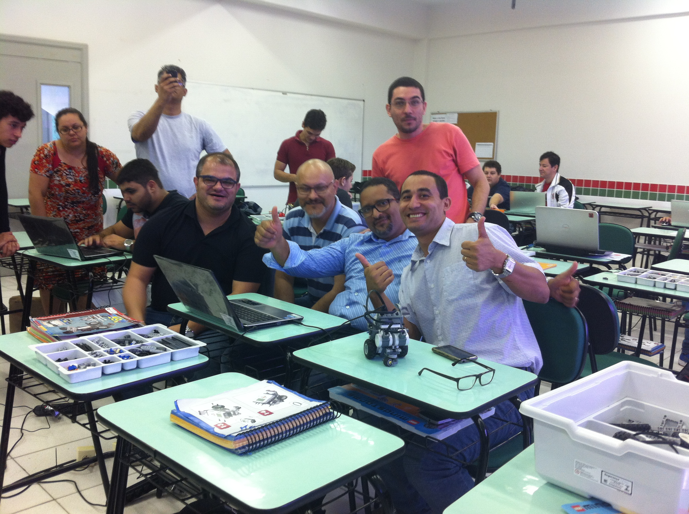
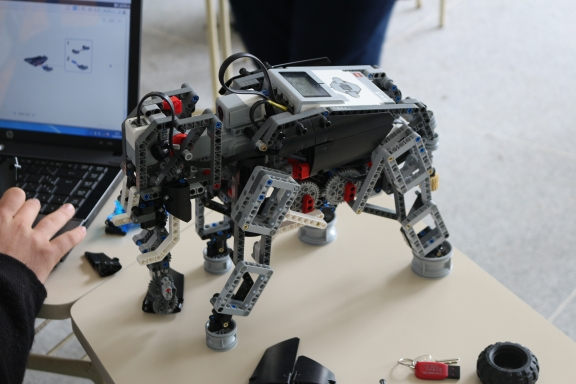
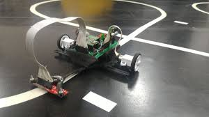
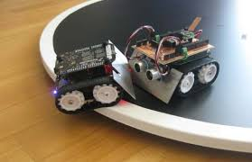
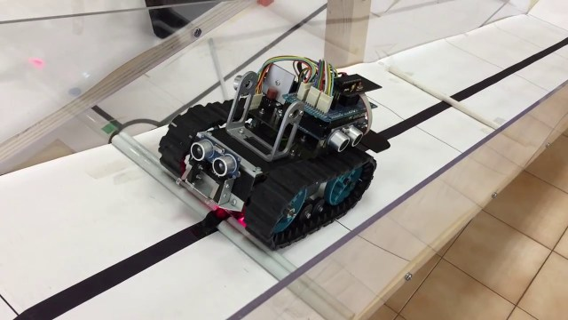

Instituto Federal do Paraná
Campus Paranaguá
Projetos
No IFPR (Campus Paranaguá) existem vários projetos sendo realizados pelos alunos. A partir do auxilio de orientadores, eles desenvolvem suas ideias contribuindo para a sociedade e sua formação como estudante. Entre os diversos projetos há o projeto de robótica, no qual os estudantes constroem seus robôs a partir dos equipamentos fornecidos pelo campus, para cumprirem algum objetivo. Para as modalidades de robótica temos:
Robótica com Lego
Robótica com Arduíno
Seguidor De Linha
O objetivo dessa modalidade é fazer com que o robô, de forma totalmente autônoma, siga uma linha preta e complete uma volta na pista desviando de alguns obstáculos.
Sumô
O sumô exige que uma arena circular, onde 2 robôs sumôs se enfrentam e o objetivo é colocar o adversário fora da arena.
Resgate
A modlidade de Resgate possui diversos obstáculos e objetivos, tendo como princípio colocar um objeto em uma determinada área.

Desenvolvido por: Bill Gates